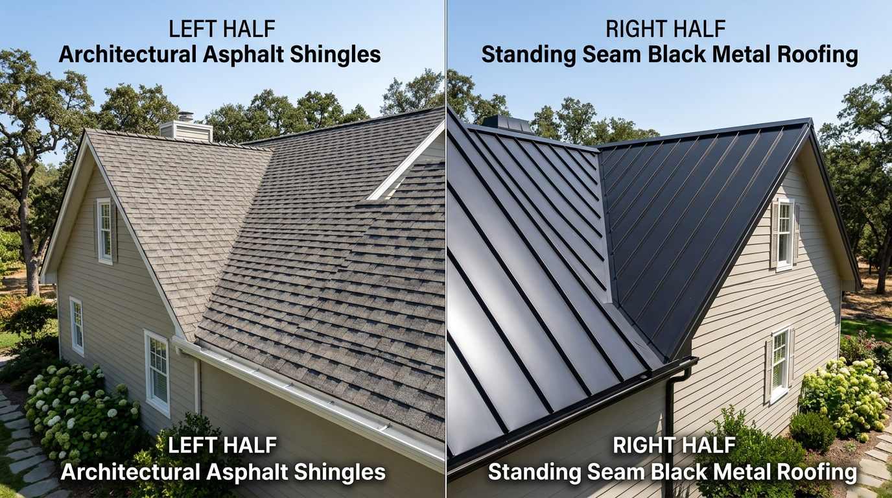

Key Takeaways for Homeowners
- Upfront Affordability: Architectural asphalt shingles cost $450 to $650 per square installed in Somerset County, making them 50% to 65% less expensive upfront than standing seam metal.
- 50-Year Lifecycle Value: Standing seam metal roofs last 50 to 70+ years with virtually zero maintenance, outlasting two to three asphalt roof replacements.
- Storm & Winter Performance: Metal roofs shed snow effortlessly, eliminate ice dams, and carry wind uplift ratings up to 150+ mph. Asphalt shingles top out at 130 mph with high-wind fastening.
- Energy Efficiency: Kynar 500 cool-roof metal coatings reflect up to 70% of solar radiation, reducing attic summer heat loads by up to 25% compared to standard dark shingles.
- HOA & Aesthetics: While metal suits modern farmhouses, Colonials, and accent porches, certain Bridgewater and Basking Ridge HOAs restrict full-metal roofs to maintain neighborhood uniformity.

Quick Answer: Which Roof Should You Choose?
Choose architectural asphalt shingles if your budget prioritizes low upfront cost, you plan to relocate within 10 to 15 years, or your neighborhood HOA mandates traditional asphalt curb appeal. Modern dimensional shingles (such as GAF Timberline HDZ or CertainTeed Landmark) provide 22 to 28 years of reliable protection against New Jersey rain and wind at an accessible investment.
Choose standing seam metal roofing if you are in your "forever home," want a lifetime roof that will never need shingle blow-off repairs, struggle with chronic ice dams along shaded eaves, or want maximum solar reflectivity to lower summer electric bills. Metal is also popular as an architectural accent over front porches, dormers, and bay windows when combined with asphalt on main roof decks.
Head-to-Head Comparison Table
The table below reflects current material specifications and installed regional labor rates across Somerset and Hunterdon counties:
| Performance Factor | Architectural Asphalt Shingles | Standing Seam Metal (24-Ga Steel) |
|---|---|---|
| Installed Cost (Per Square) | $450 – $650 per 100 sq ft | $1,100 – $1,800 per 100 sq ft |
| Expected NJ Lifespan | 22 – 28 Years | 50 – 70+ Years |
| Wind Resistance Rating | 110 – 130 mph (with 6-nail pattern) | 140 – 160+ mph (concealed fastener clips) |
| Snow & Ice Shedding | Granules retain snow; prone to ice dams if ventilation is poor | Slick Kynar finish sheds snow quickly; prevents ice dam leaks |
| Fire Resistance | Class A (Fiberglass core) | Class A (Non-combustible steel) |
| Solar Reflectivity (Cool Roof) | 10% – 25% (Standard shingles) | 50% – 70% (Energy Star reflective finishes) |
| Hail & Impact Rating | Class 3 standard (Class 4 available) | Class 4 impact resistance (UL 2218) |
| Weight on Decking | 240 – 380 lbs / square | 90 – 150 lbs / square (Significantly lighter) |
| Installation Duration | 1 to 2 days for typical home | 3 to 5 days (requires specialized metal craftsmen) |
Upfront Cost vs. 50-Year Lifecycle Return on Investment
While upfront pricing makes asphalt shingles the choice for over 80% of Central New Jersey reroofing projects, metal roofing often proves more cost-effective when evaluated over a 50-year horizon.
On a typical 2,500 square foot Bridgewater home (approximately 30 roofing squares):
- Architectural Shingles: Costs roughly $13,500 to $18,500 today. Over a 50-year period, the roof must be replaced at least twice, plus potential storm repair deductibles, totaling $40,000+ in lifetime expenditures when factoring in future inflation.
- Standing Seam Metal: Costs roughly $33,000 to $50,000 upfront. However, this single installation typically lasts 50 to 70 years without requiring replacement, virtually eliminating future re-roofing disruption and labor inflation.
Expert Estimator Tip: The Hybrid Approach
Many Bridgewater homeowners combine the two systems to achieve high-end curb appeal on a manageable budget. We frequently install architectural shingles on the main high-pitch roof planes, and install standing seam metal over front porches, dormers, and low-slope bay windows. This adds striking architectural contrast while keeping total investment affordable.
Want to Compare Real Shingle and Metal Samples on Your Home?
Schedule an in-person consultation with our certified estimators. We bring full manufacturer color boards, standing seam gauge samples, and provide side-by-side estimates tailored to your roof geometry.
Weather Resilience in Central New Jersey: Shingles vs. Metal
Somerset County experiences extreme seasonal shifts—from humid 95°F summer heatwaves to sub-zero winter temperatures, heavy nor'easters, and wet spring squalls. Here is how each material responds:
1. Winter Snow Loads and Ice Dam Resistance
Ice damming occurs when heat escaping into the attic melts underside snow, which runs down to cold roof overhangs and refreezes, backing water under shingles. Shingle roofs require multi-layer self-adhering ice-and-water membranes along the lower eaves to prevent interior leaks. In contrast, standing seam metal roofing features continuous vertical panels with raised watertight mechanical seams. Snow slides off freely, preventing heavy drift buildup and eliminating capillary water back-up.
Critical Snow Guard Requirement for Metal Roofs
Because metal roofs shed snow quickly, roofers must install engineered snow guards or snow retention bars over doorways, walkways, driveways, and landscaping. Uncontrolled snow slides can damage gutters or endanger pedestrians beneath eaves.
2. Severe Wind and Gust Resistance
During severe summer storms and tropical depressions, wind gusts can exceed 60 to 75 mph in open Central Jersey corridors. High-grade architectural shingles carry a 130 mph wind warranty, but this relies entirely on proper thermal sealant activation and manual 6-nail nailing patterns. If shingles age and lose seal-strip adhesion, individual tabs can lift and tear off.
Standing seam metal panels are anchored directly to the roof deck using concealed stainless steel expansion clips. Because there are no horizontal overlapping seams or exposed fasteners, wind uplift resistance exceeds 140 to 160 mph, making blow-offs virtually non-existent.
3. Algae and Moss Growth in Wooded Somerset Neighborhoods
Homes located in wooded areas like Martinsville, Basking Ridge, and Warren frequently suffer from black streaking caused by Gloeocapsa magma airborne algae. While modern shingles include zinc and copper granule coatings that resist algae for 10 to 25 years, moss and lichen can still take root in damp shaded corners. Metal roofs have completely non-porous fluoropolymer finishes where moss and organic spores cannot adhere.
Aesthetics, Acoustic Comfort, and Resale Value
Is Metal Really Louder in the Rain?
A persistent misconception is that a metal roof will sound like a tin barn during rainfall. In agricultural pole barns, metal is fastened directly over open framing without solid roof decking. On a residential home, the standing seam roof sits on 1/2" or 5/8" CDX plywood or OSB decking, covered by high-temp synthetic underlayment, an enclosed attic air gap, and R-38 to R-60 ceiling insulation. In independent acoustic testing, decibel levels between shingle and metal residential roofs during rainfall differ by less than 3 dB—imperceptible to the human ear.
Curb Appeal & Architectural Styles
Architectural shingles offer timeless, dimensional shadow lines that complement traditional Center Hall Colonials, Split-Levels, and Cape Cod homes common throughout Bridgewater, Somerville, and Hillsborough. Metal roofing provides crisp, sleek modern lines that dramatically elevate Modern Farmhouse, Contemporary, Craftsman, and Dutch Colonial designs.
Impact on Home Resale Value
According to the Remodeling Magazine Cost vs. Value Report, homeowners recoup between 60% and 68% of a standing seam metal roof's investment value at resale, compared to 61% to 65% for asphalt shingles. Furthermore, a transferable lifetime metal roof warranty is an exceptional selling advantage for potential buyers wary of future roof replacements.
The Homeowner Decision Framework
Use this checklist to determine which roofing material best matches your property:
Choose Architectural Asphalt Shingles If:
- ✓ You want the lowest upfront expenditure while securing dependable 20+ year protection.
- ✓ You plan to move or downsize within the next 5 to 15 years.
- ✓ Your HOA architectural committee requires traditional asphalt colors.
- ✓ Your home's architectural style is a standard suburban Colonial or Ranch where shingle textures look most native.
- ✓ You want the project completed quickly in just 1 to 2 days.
Choose Standing Seam Metal If:
- ✓ You intend to stay in your home long-term and never want to re-roof again.
- ✓ You experience chronic winter ice dams or live on high, wind-exposed ridge elevations.
- ✓ You are installing rooftop solar panels and want a 50+ year roof that will not require replacement under the solar array.
- ✓ You want maximum energy efficiency and lower attic cooling temperatures.
- ✓ You desire distinctive architectural curb appeal with matte charcoal, bronze, or slate gray tones.
Sources & Authoritative References
- National Roofing Contractors Association (NRCA): NRCA Roofing Manual: Metal Panel and Architectural Sheet Metal Roofing Systems.
- Insurance Institute for Business & Home Safety (IBHS): FORTIFIED Roof Standards for High Wind and Hail Resistance.
- GAF Technical Service Bulletins: Wind Resistance & Fastening Specifications for Timberline HDZ Shingles.
- Metal Roofing Alliance (MRA): Residential Metal Roofing Durability & Life Cycle Assessment.
- New Jersey Department of Community Affairs (DCA): Uniform Construction Code (UCC) N.J.A.C. 5:23 — Residential Re-roofing Standards.
Dave Collins inspected this guide on September 18, 2026, confirming all fastener specifications, UCC building code references, and price ranges align with current Somerset County standards.
Frequently Asked Questions
No. When installed on a residential home over solid plywood roof decking with synthetic underlayment and attic insulation, modern standing seam metal roofs produce virtually no noticeable acoustic difference from asphalt shingles during New Jersey rainstorms.
In Somerset County, NJ, a residential standing seam metal roof typically costs between 2.2x and 2.8x more upfront than architectural shingles ($1,100 to $1,800 per square for metal vs. $450 to $650 per square for architectural shingles). However, metal lasts 50 to 70+ years compared to 22 to 28 years for asphalt.
While New Jersey UCC allows up to two roofing layers under specific circumstances, reputable roofing contractors strongly recommend a complete tear-off. Stripping to the bare decking allows thorough inspection of rotted plywood, installation of high-temp ice barrier underlayment, and prevents hidden moisture traps.
Some planned residential developments and townhome communities in Somerset County have architectural covenants that mandate uniform asphalt shingle colors (such as Weathered Wood or Charcoal). Always review your HOA bylaws before contracting a metal roofing installation.
No. Metal does not attract lightning; lightning strikes the highest topographical point regardless of material. Furthermore, metal is non-combustible (Class A fire rated), so if struck, it safely dissipates energy without igniting.